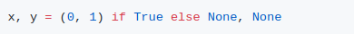
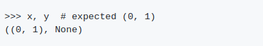
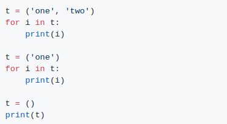
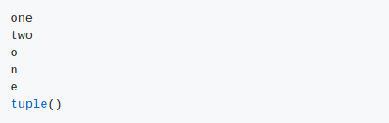

1.
output
대부분의 모든 파이선 프로그래머는 비슷한 상황에 처한다.
2.
output
설명:
1의 경우, 예상 동작에 대한 올바른 문장은 x, y = (0, 1) True이면(없음, 없음).
2의 경우, 예상 동작에 대한 올바른 문장은 t = ('one',) 또는 t = 'one', (noting 쉼표)이며, 그렇지 않으면 해석자는 t를 str으로 간주하여 문자별로 반복한다.
()는 특수 토큰이며 빈 튜플을 나타낸다.